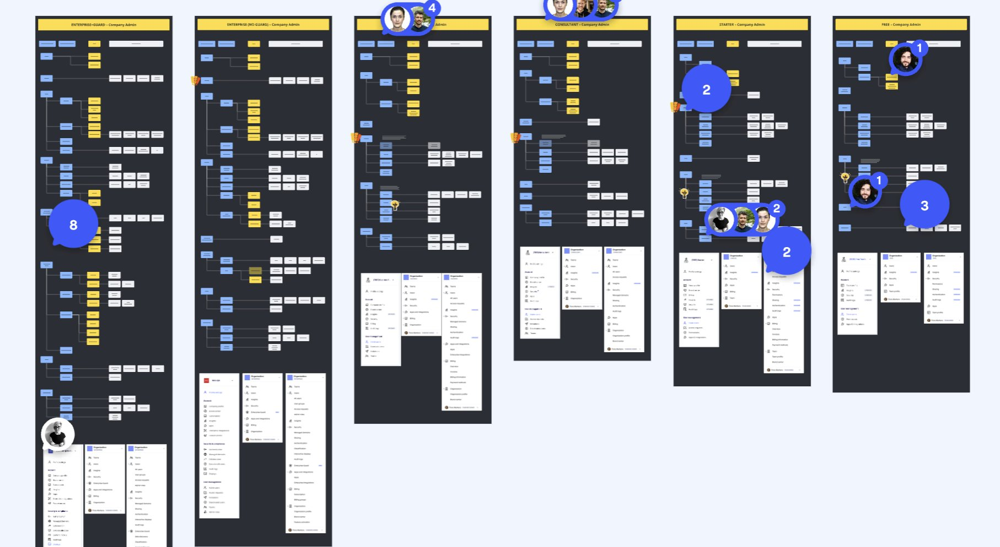
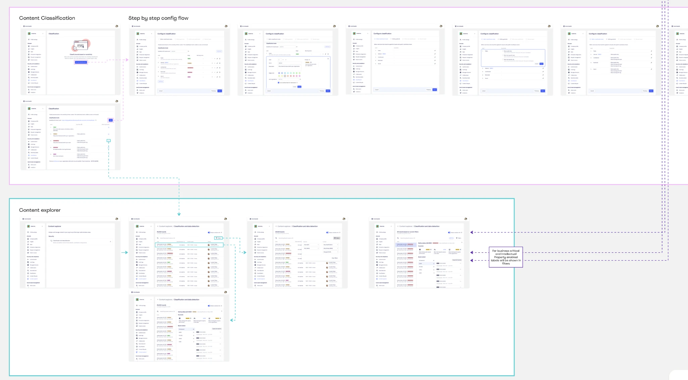
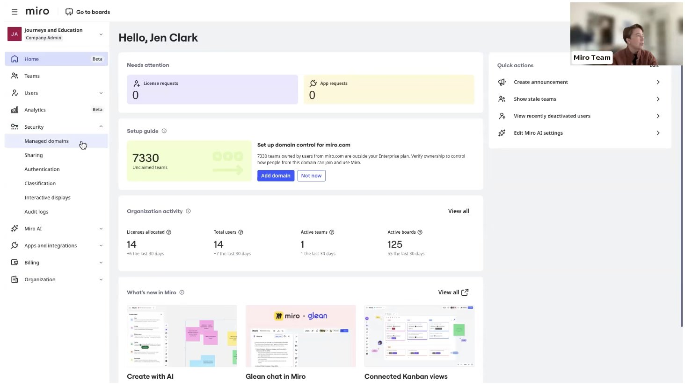
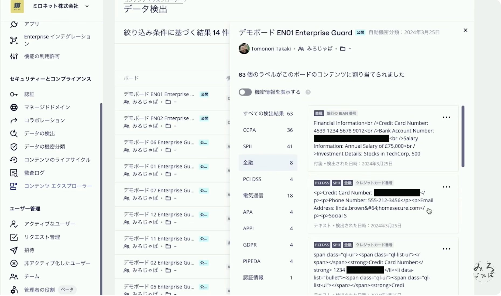
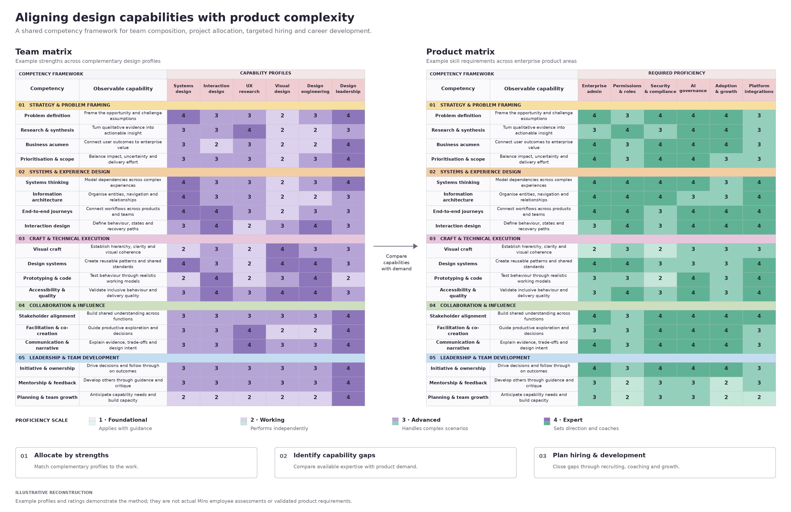
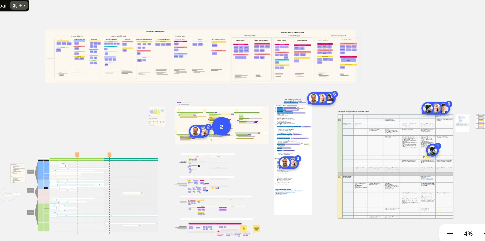

Building the
Enterprise Foundation
for Miro's Growth
I led design across Growth and Enterprise, owning the admin and enterprise experience. I secured investment in a dedicated customer-experience engineering team, grew design to 20 people, and led the experience strategy behind capabilities that helped enable more than €300 million in signed enterprise contracts.
Chapter 00
Making the Case for Enterprise Investment
Building the case internally
I was hired to build Miro's enterprise foundation. That meant owning the experience through which organizations administered the product, controlled access, protected content, and supported adoption.
The investment was not self-evident internally. Our CEO questioned whether admins cared enough about usability to justify shifting attention from the canvas and its end users. Rebuilding the legacy experience also carried migration risk, and the return was uncertain.
I commissioned and gathered customer evidence, worked with business development and support to understand lost customers, and partnered with a data scientist to assess potential growth and ARR. The evidence challenged an assumption behind our priorities: admins were less technical than we expected, and customers could not simply work around a difficult enterprise experience.
I used that evidence to argue for rebuilding the information architecture and funding a dedicated team focused on the customer journey. The decision was about what Miro needed to become a product large enterprises could adopt and expand.

Chapter 01
Build the Enterprise Foundation
From fragmented functionality to one coherent system
I made the case for replacing the legacy information architecture with a model grounded in customer feedback. We shipped that foundation first so subsequent capabilities could build on a shared structure. We also replaced custom interface code with the design system we had created.
The transition carried real customer risk. Enterprises had integrations with ServiceNow and other third-party systems that their operations depended on. Changing the experience without protecting those connections could disrupt existing customers.
We phased the rollout by region and enterprise size. For the largest and most complex accounts, we managed transitions individually. I funded a team to provide hands-on migration support, giving those customers direct help as they moved to the new experience.
Cohesion over consistency guided our priorities: contradictory behavior needed attention before every visual difference did. The goal was a system customers could understand and continue to rely on throughout the transition.

Cohesion over consistency. Does it behave like Miro? Is the mental model aligned? Visual inconsistency could wait. Contradictory behavior couldn't.

The other output of this phase was the control layer itself: the first system giving enterprise admins visibility across users, teams, activity, and adoption. It was built on granular authorization, designed to answer one question at any scope: who can do what, and where?
Chapter 02
Turn Requirement Into Growth Lever
From prerequisite to business value
I initially prioritized enterprise capabilities that customers needed before they could sign. Working with my Product counterpart, I connected the roadmap to purchasing requirements surfaced through customers, business development, and support.
I proposed security and data-protection capabilities on the canvas, including capabilities that became paid offerings. Enterprise Guard and the broader compliance, content-security, and AI-security work helped meet requirements for deals representing more than €300 million in signed enterprise contract value.
That figure represents the value of the supported contracts, rather than revenue from the add-ons alone. It reflects the commercial importance of making Miro acceptable for enterprise use.
We then expanded our focus to helping customers grow adoption. Admins became an audience we deliberately equipped to champion Miro: understanding usage, introducing capabilities, and supporting adoption across their organizations. We judged progress through signed deals, ARR, and monthly active usage.
Enterprise scale is not simply more users. It is more contexts, more policies, and more constraints.
Entering Japan meant rebuilding infrastructure, not just localizing UI. I spent a week in Tokyo working directly with the Japanese team, customers, and end users to understand what data residency actually required: storing data in Japan-based warehouses without breaking the real-time collaboration that makes Miro work.
Trust became a paid feature, not a compliance checkbox. Enterprises were adding confidential IP directly onto their boards, and were willing to pay a 30% premium to know it was protected. Resolving the freedom vs. control tension took six months and shipped as Enterprise Guard.

Chapter 03
AI Changed What Control Meant
When the model changes, the rules change with it
When the AI wave hit, enterprise adoption lagged expectations, not because customers didn't want AI, but because AI didn't arrive as an isolated feature. It cut through every layer we'd already built: permissions, administration, security, compliance, governance, and the collaboration experience itself.
The architecture we'd designed for "who can access this content?" was not the right architecture for "what can intelligence do with this content?" Every system had to be rethought.
Customers experienced both journeys as one. Our org structure didn't reflect that yet.
Helping organizations evaluate risk, configure access, and govern usage at a granular level, including control over exactly which content could or couldn't be ingested by the model.
Helping organizations identify risk, understand impact, apply policy, protect content, and respond to incidents. Customers experienced both journeys as one. Our org structure didn't reflect that yet.
Chapter 04
Build the Team
From headcount to capability
I led the design team across Growth and Enterprise, with authority over hiring and design budgets. I expanded the team to 20 people, using a skills matrix to identify the capabilities the future portfolio required and guide hiring.
Design capacity alone would not resolve the fragmentation. I also made the investment case to our CEO for a dedicated team of 30 engineers focused on the admin and enterprise customer experience. This gave the work sustained engineering attention for improving journeys, building missing capabilities, and moving away from legacy products.
I worked with my Product counterpart to determine priorities. Customer research, commercial requirements, and migration dependencies informed where we invested effort. Building the organization and rebuilding the product were connected responsibilities: the strategy needed a team capable of delivering across the boundaries that customers experienced.

You may own an area, but you are building one system.
When the architecture of the product changes, the architecture of the organization has to change with it.
Chapter 05
40 Features Shipped
Across the enterprise portfolio, 2022–2025

Admin Panel
Central area for admins to manage their Miro infrastructure, settings, and organization-wide policies.
Admin Dashboard & Insights
Visibility into environment health, AI adoption, and overall Miro adoption across the organization.
Enterprise Guard
Protects IP content and PII within the platform. Drove a 30% revenue premium on enterprise contracts.
AI Settings: Granular Controls
Fine-grained controls over how AI capabilities are enabled, governed, and scoped at org, team, and board level.
Multi-Region Collaboration
Supports distributed teams collaborating across regions, including Japan data residency infrastructure.
Custom Roles
Admins can create roles tailored to their organization's permission structure and security requirements.
Lifecycle Management
Governs what happens to boards over time: archiving, legal hold, data retention, and decommission.
Miro Announcements
Lets admins broadcast information, policy changes, and new feature access directly to their users.
Chapter 06
Results
Three years of enterprise transformation